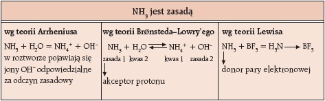

Teorie kwasów – od Arrheniusa do Lewisa
Pierwszą definicję kwasów wprowadził Svante Arrhenius pod koniec XIX wieku, definiując kwas jako substancję, która w wodzie uwalnia jony wodorowe (H⁺). To podejście sprawdziło się doskonale dla roztworów wodnych, ale miało ograniczenia — nie wyjaśniało zachowań kwasów w innych rozpuszczalnikach. Później, w 1923 roku, Brønsted i Lowry rozszerzyli tę definicję, opisując kwas jako donor protonu (H⁺), co otworzyło nową perspektywę: kwasy i zasady mogą reagować nie tylko w wodzie, lecz w wielu innych środowiskach. Ta teoria pozwoliła zrozumieć mechanizmy wielu reakcji chemicznych, w tym tych zachodzących w organizmach żywych. Następnie Gilbert Lewis wprowadził jeszcze szersze pojęcie kwasu jako akceptora pary elektronowej, co pozwalało definiować kwasy i zasady także w reakcjach, gdzie proton nie jest przenoszony, lecz dochodzi do tworzenia wiązań koordynacyjnych. Ta teoria znalazła zastosowanie w chemii koordynacyjnej i katalizie.
Klasyfikacja kwasów ze względu na budowę i pochodzenie
Kwasy dzieli się na kilka podstawowych grup według ich budowy chemicznej i pochodzenia:
- Kwasy nieorganiczne (mineralne) — takie jak kwas siarkowy (H₂SO₄), azotowy (HNO₃) czy solny (HCl), które zazwyczaj nie zawierają węglowodorowego szkieletu. Są to kwasy tlenowe lub beztlenowe o prostych strukturach molekularnych.
- Kwasy organiczne zawierają węgiel i tworzą większe, często rozgałęzione struktury. Przykłady to kwas octowy (CH₃COOH), mrówkowy (HCOOH), cytrynowy (C₆H₈O₇). Są one zazwyczaj słabsze od kwasów mineralnych i często wykorzystywane w żywności czy przemyśle kosmetycznym.
- Kwasy tlenowe mają w swojej strukturze atomy tlenu związane z atomem centralnym (np. siarka w H₂SO₄). Ich właściwości zależą od liczby grup OH i tlenu, które wpływają na moc kwasu.
- Kwasy beztlenowe nie zawierają tlenu, np. HCl, HF. Ich charakter chemiczny różni się znacznie od kwasów tlenowych, często wykazują większą lotność i inną toksyczność.
Podział kwasów według liczby protonów i mocy kwasowej
Kwasy można podzielić na jedno-, dwu- i trójprotonowe, w zależności od liczby protonów (jonów H⁺), które mogą oddać w reakcji dysocjacji:
- Jednoprotowe oddają jeden proton i dysocjują zwykle całkowicie, np. HCl.
- Dwuprotowe mogą oddać dwa protony w dwóch etapach, np. H₂SO₄ – pierwszy proton oddaje się całkowicie, drugi częściowo.
- Trójprotonowe oddają trzy protony, np. kwas fosforowy (H₃PO₄), przy czym każdy kolejny proton oddawany jest coraz trudniej (mniejsza stała dysocjacji Ka).
Moc kwasu mierzy się stałą dysocjacji (Ka) i jej logarytmem (pKa). Im niższe pKa, tym kwas jest silniejszy. Ta wartość wpływa na reakcje kwasów i ich zastosowanie w chemii analitycznej i syntezach.
Kwasy mocne i słabe – różnice i przykłady
- Kwasy mocne (np. HCl, HNO₃, H₂SO₄) całkowicie dysocjują w roztworze wodnym, dając pełne stężenie jonów H⁺. To powoduje ich silne działanie żrące i wyraźne właściwości chemiczne.
- Kwasy słabe (np. CH₃COOH, H₂CO₃) dysocjują tylko częściowo. Oznacza to, że w roztworze znajduje się równowaga między niezdysocjowaną cząsteczką a jonami H⁺ i resztą kwasową. Kwasy słabe często mają zastosowania w biochemii i przemyśle spożywczym, gdzie ich działanie musi być kontrolowane i łagodne.
Różnice w mocy wpływają na ich właściwości fizyczne, zastosowania oraz metody analizy i neutralizacji.